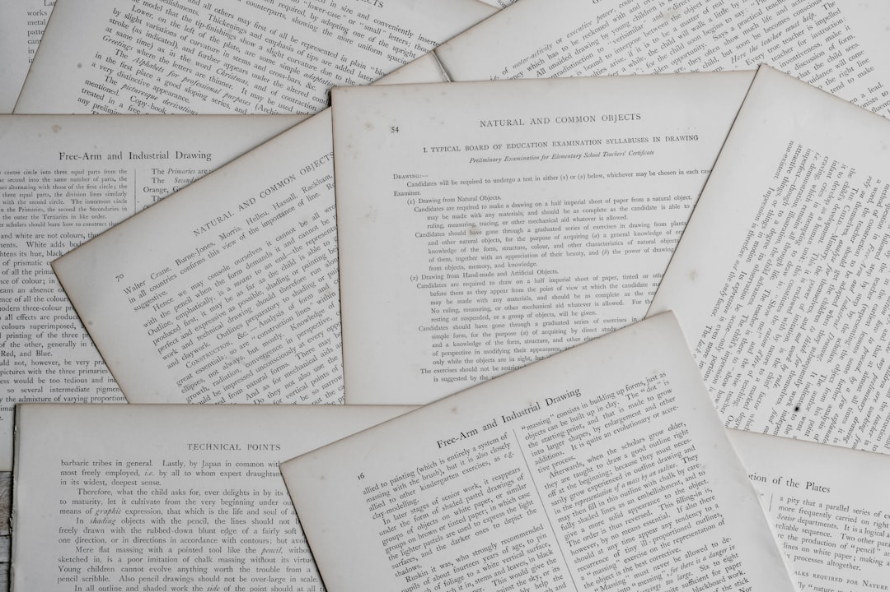

The Power of Teaching: How One Classroom Confrontation Reveals the Hidden Dynamics of Authority and Historical Truth
Picture this: A student walks into a classroom expecting to encounter a teaching assistant, only to find himself face-to-face with the actual professor. What follows is not just a case of mistaken identity, but a masterclass in power dynamics, historical truth, and the transformative potential of education. This scene, captured in a viral video, offers us a profound window into how authority operates in educational spaces and how skilled educators can turn moments of disrespect into powerful learning opportunities.
The interaction begins with casual misogyny—a student making inappropriate comments about adult content—but evolves into something far more meaningful: a lesson about power, history, and the responsibility we all bear in understanding our shared past. Let's dive deep into what this classroom confrontation can teach us about education, authority, and the stories we tell ourselves about history.
The Anatomy of Classroom Power Dynamics
When Trent, the student in question, realizes his mistake and attempts to deflect with inappropriate humor, he unknowingly steps into a carefully orchestrated lesson about power itself. The teacher's response is surgical in its precision: she doesn't just shut down his behavior—she uses it as a teaching moment that illuminates the very concept they're studying.
Defining Power in Real Time
"What's your name? Trent. Can you tell me the definition of power, Trent?" This simple exchange demonstrates masterful classroom management. Rather than immediately punishing the student or escalating the conflict, the teacher redirects the energy toward learning. She's not just asserting her authority—she's teaching about authority itself.
The student provides a textbook definition: "It's the ability to direct or influence another's behavior or course of events." But the teacher doesn't stop there. She makes it personal, immediate, and concrete: "That's what I have. I can remove you from this class and fail you, or I can send you before the dean for violating the student code of conduct. These are all things that can alter the course of your life. That's power. You don't have any."
This moment is brilliant for several reasons:
- Immediate relevance: The abstract concept of power becomes tangible and present
- Personal stakes: The student understands that his actions have real consequences
- Educational purpose: The lesson serves the curriculum while addressing behavior
- Respect establishment: Authority is clarified without humiliation
The Psychology of Classroom Authority
What makes this interaction so effective is how it demonstrates the difference between authoritarian control and educational authority. The teacher isn't wielding power for its own sake—she's using her position to create a learning environment where difficult truths can be explored safely.
Research in educational psychology shows that students learn best when they feel both challenged and supported. This teacher creates what psychologists call a "optimal anxiety zone"—enough tension to focus attention, but not so much that it becomes counterproductive. The student is clearly uncomfortable, but he's also engaged and learning.
From Columbus to Today: Unpacking Historical Narratives
The transition from classroom management to historical content is seamless and intentional. The teacher uses the moment of established authority to dive into one of the most challenging aspects of American history education: confronting the reality of colonization and its ongoing impact.
The Columbus Revelation
"When Christopher Columbus first came in contact with Native Americans, it was the Arawak people in the Bahamas. I'll read to you from Columbus's journal." This moment represents a fundamental shift in how history is often taught. Instead of the sanitized version many students learned in elementary school—Columbus as brave explorer—the teacher presents primary source evidence of Columbus's own words and intentions.
The journal excerpt is devastating in its clarity: "They willingly traded us everything they owned. They do not bear arms and do not know them... They will make fine slaves. With 50 men, we could subjugate them all and make them do whatever we want."
This isn't anti-American propaganda or revisionist history—it's simply what happened, documented in Columbus's own hand. The power of primary sources lies in their inability to be dismissed as interpretation or bias. These are the explorer's own thoughts, recorded for posterity.
Making History Personal
The teacher's next move is perhaps the most sophisticated part of the entire interaction: "You ever feel like that, Trent? You ever feel like making someone do what you want, whether they want to or not?"
This question does several things simultaneously:
- It connects historical events to personal experience
- It challenges the student to examine his own motivations
- It draws a direct line from his earlier inappropriate behavior to historical patterns of domination
- It makes the abstract concept of colonialism concrete and immediate
The brilliance here is that the teacher isn't accusing Trent of being like Columbus—she's asking him to reflect on the human impulses that drive domination and control. It's a moment of profound psychological and historical education happening simultaneously.

The European Mentality: Understanding Systemic Oppression
The teacher's analysis goes beyond individual psychology to examine systemic and cultural factors: "It's a very European mentality, stemming from the oppressive political and religious structures of the Renaissance. Kings and priests with absolute power ruling masses who have none."
Historical Context and Cultural Programming
This explanation is crucial for several reasons. First, it helps students understand that colonialism wasn't just individual cruelty—it was a systemic approach to power that was deeply embedded in European culture. The feudal system, absolute monarchy, and religious hierarchy all contributed to a worldview where some people were naturally meant to rule and others to be ruled.
Second, it provides context without excuse. The teacher isn't saying that European culture was inherently evil, but rather that it had developed particular structures and attitudes about power that shaped how Europeans interacted with other peoples. Understanding these historical patterns helps us recognize similar dynamics in our own time.
The Persistence of Historical Patterns
"That was the mentality of the men who discovered America. And it's the mentality our society struggles with today." This connection between past and present is where the real educational power lies. History isn't just about what happened long ago—it's about understanding the forces that continue to shape our world.
The teacher is helping students recognize that:
- Historical patterns don't just disappear—they evolve and persist
- Understanding the past helps us recognize present-day dynamics
- We all carry forward both the benefits and burdens of historical processes
- Awareness is the first step toward change
Challenging Dominant Narratives
Perhaps the most radical moment in this entire interaction comes when the teacher directly challenges how history is typically taught: "What you know of history is a dominant culture's justification for its actions. And I don't teach that. I'll teach you what happened. To my people. And to yours."
The Politics of Historical Education
This statement cuts to the heart of one of the most contentious issues in education today: whose stories get told, and how they get told. Traditional history education has often focused on the perspectives and experiences of those in power, presenting their actions as inevitable or justified.
The teacher's approach is different. She's committed to teaching "what happened"—not the sanitized version, not the justification, but the complex, often uncomfortable reality. This doesn't mean she's teaching students to hate their country or their heritage. Instead, she's teaching them to understand their country and heritage more completely and honestly.
Personal Stakes in Historical Truth
When the teacher says "To my people. And to yours," she's making something clear that's often hidden in academic discourse: she has personal stakes in this history. She's not a disinterested observer teaching abstract facts—she's someone whose ancestors lived through these events, whose family and community carry forward both trauma and resilience from this history.
But she doesn't stop there. "And to yours"—she reminds her students that they too have stakes in this history. Whether their ancestors were colonizers or colonized, enslaved or enslavers, immigrants or indigenous peoples, they all carry forward the complex legacy of American history.
The Universal Experience of Subjugation
The teacher's final point is perhaps the most profound: "Because we're all the descendants of the subjugated. Every one of us." This statement reframes the entire conversation in a way that's both historically accurate and psychologically healing.
Breaking Down Us-Versus-Them Thinking
One of the biggest challenges in teaching difficult history is the tendency for students to divide into camps: descendants of oppressors versus descendants of the oppressed. This binary thinking often prevents real learning and understanding.
The teacher's insight cuts through this division by pointing out a fundamental truth: if you go back far enough in anyone's family history, you'll find ancestors who were conquered, displaced, enslaved, or otherwise subjugated. The European peasants whose descendants became American colonizers were themselves oppressed by feudal lords. The African peoples who were enslaved had their own complex histories of kingdoms and conquests.
Shared Humanity in Historical Experience
This perspective doesn't minimize or equate different forms of oppression—the specific horrors of the Middle Passage, for example, remain unique and must be understood in their particularity. Instead, it creates a foundation for empathy and understanding by recognizing that the capacity for both cruelty and suffering is part of the human condition.
Students can begin to understand historical events not as the actions of fundamentally different kinds of people, but as the result of particular circumstances, systems, and choices that any group of humans might face.
The Transformation: From Confrontation to Connection
The most remarkable aspect of this entire interaction is how it ends. The student who began with casual disrespect and inappropriate humor concludes with a genuine apology: "Miss, um... Long. Miss Long, I'm sorry. I wasn't... I didn't mean to, I was just... I know what you were doing. I'm sorry."
The Power of Educational Authority
This transformation didn't happen through punishment or humiliation. It happened through skilled teaching that:
- Established clear boundaries and consequences
- Connected personal behavior to larger patterns and principles
- Provided historical context that illuminated present-day dynamics
- Created space for reflection and growth
- Maintained dignity for all parties involved
The student's apology shows that he's not just sorry for getting in trouble—he understands what the teacher was doing and why it mattered. He's learned something about power, about history, and about himself.
Modeling Respectful Dialogue
The teacher's response is equally important: "I know what you were doing. I'm sorry. Insult me or anyone else in my class and you're out. Apology accepted. Thank you." She acknowledges his understanding, restates her boundary, accepts his apology, and moves forward. No grudges, no extended punishment, no humiliation—just clear expectations and mutual respect.
Lessons for Educators and Students
This classroom interaction offers valuable lessons for anyone involved in education, whether as teacher, student, or concerned community member.
For Educators
Use disruption as opportunity: Instead of simply shutting down inappropriate behavior, skilled teachers can use these moments as entry points for meaningful learning.
Make abstract concepts concrete: Power, authority, historical patterns—these can all be made real and immediate through skillful teaching.
Connect past and present: History becomes relevant when students can see how historical patterns continue to shape their world.
Maintain dignity while enforcing boundaries: It's possible to be firm about expectations while still treating all students with respect.
Share your stakes: Students need to understand that learning isn't just academic—it's personal and political and urgent.
For Students
Recognize the power dynamics you're part of: Understanding how authority works helps you navigate it more effectively.
Question the stories you've been told: Much of what passes for common knowledge is actually particular perspectives presented as universal truth.
See yourself in history: You're not just learning about other people's experiences—you're learning about forces that continue to shape your own life.
Take responsibility for your impact: Your words and actions affect others, and understanding that is part of growing up.
For All of Us
Difficult conversations are necessary: Avoiding hard topics doesn't make them go away—it just ensures we'll repeat historical mistakes.
Education is political: There's no such thing as neutral education—we're always choosing whose stories to tell and how to tell them.
Change is possible: People can learn, grow, and transform their understanding when given the right opportunities.
Conclusion: The Ripple Effects of Transformative Teaching
What started as a moment of casual disrespect in a college classroom became something much more significant: a demonstration of how education can transform understanding, how authority can be wielded responsibly, and how difficult histories can be taught with both honesty and compassion.
This interaction matters because it shows us what's possible when educators are skilled, brave, and committed to truth-telling. It demonstrates that students are capable of growth and change when challenged appropriately. And it reveals how individual moments in classrooms can connect to the largest questions of power, history, and human nature.
The teacher in this video didn't just manage a disruptive student—she created a learning experience that will likely stay with everyone in that room for years to come. She showed how personal authority and historical authority intersect, how individual behavior connects to larger patterns, and how understanding the past can help us navigate the present.
In our current moment, when debates about education, history, and authority rage across the country, this classroom interaction offers a model worth considering. It shows that we can teach difficult truths without hatred, establish authority without authoritarianism, and create learning environments where growth and transformation are possible.
The ripple effects of such teaching extend far beyond any single classroom. Students who learn to think critically about power, to question dominant narratives, and to see themselves as part of ongoing historical processes become citizens capable of participating more thoughtfully in democracy. They become people better equipped to recognize and resist the kinds of domination and subjugation that have marked so much of human history.
That's the real power of education—not just to transmit information, but to transform understanding and, through understanding, to change the world.